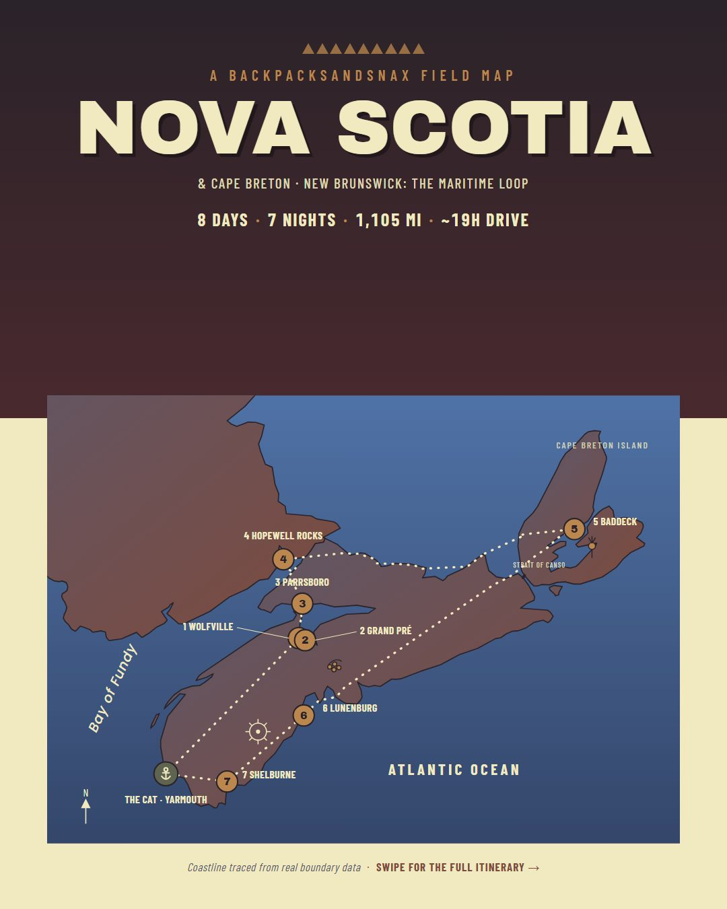
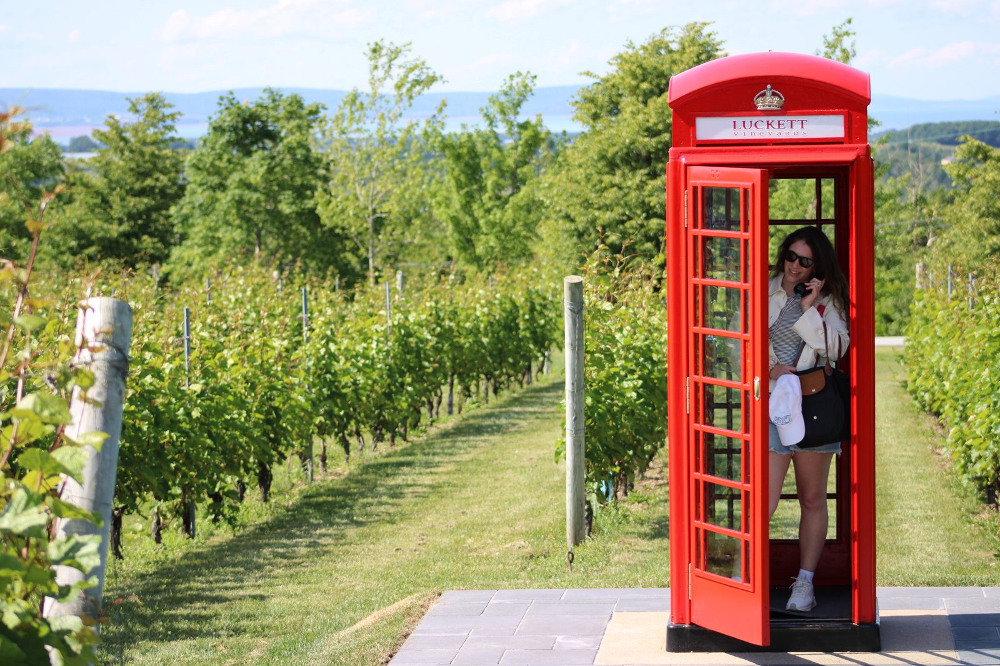
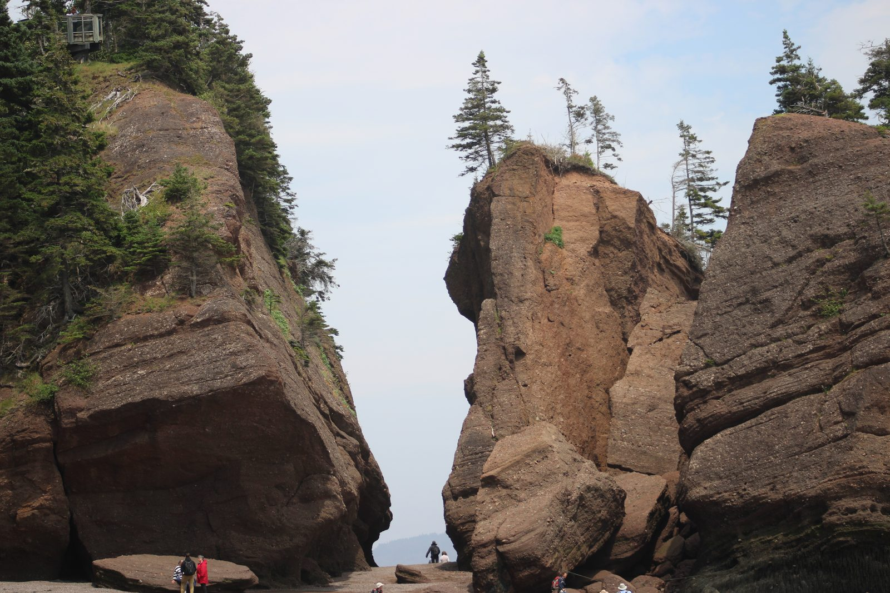

Free trip map
The Maritime Loop
8 days · 7 nights · ~1,105 mi · ~19 hrs driving
Nova Scotia, Cape Breton and a corner of New Brunswick, starting and ending at the Yarmouth ferry. Wine country, the highest tides on Earth, the Cabot Trail and a UNESCO-listed harbor town, with every stop, stay and drive we actually did.

Free, no signup. The live map opens in Google Maps, where you can save it to your own account and use it for directions on the road.
Plan Hopewell Rocks around the tide, not the clock
The Bay of Fundy swings up to about 48 feet between low and high water. At low tide you walk the ocean floor between the flowerpot rocks; six hours later the same spot is under water. Check the day's times before you drive over.
Tide times: The Hopewell Rocks or Fisheries and Oceans Canada.
Day by day
The route
Hotels are where we stayed, not sponsors. Drive times are rough, without stops.
-
Day 1
The CAT ferry to Yarmouth, then Wolfville
Stay: Tattingstone Inn, Wolfville
Sail from Bar Harbor, Maine, to Yarmouth, Nova Scotia (we left at 3:00pm and landed at 6:30pm). Drive inland and arrive in Wolfville around 9pm.
Drive ~2 hrs 30 min -
Day 2
Grand Pré wine country, then Parrsboro
Stay: Gillespie House Inn, Parrsboro (2 nights)
Morning at the Wolfville Farmers' Market if it's running. Then Luckett Vineyards (the red phone booth), Tangled Garden and Domaine de Grand Pré. Also close by: Blue Beach, Benjamin Bridge, Lightfoot & Wolfville.
Drive ~2 hrs 30 min -
Day 3
Hopewell Rocks, New Brunswick
Stay: Gillespie House Inn, Parrsboro
Day trip to the flowerpot rocks and back. Time it with the tide (see above), and hike the Fundy shore around Parrsboro with the rest of the day.
Drive ~2 hrs each way -
Day 4
Across to Cape Breton: Baddeck
Stay: The Telegraph House, Baddeck (2 nights)
Break up the drive in New Glasgow or Stellarton, about two hours in. Add the Middlehead Trail at Ingonish if you have the legs.
Drive ~4 hrs -
Day 5
The Cabot Trail
Stay: The Telegraph House, Baddeck
The big one. Ice cream at Mr. Chicken in Chéticamp along the way, and dinner back at the Telegraph House's Cable Room.
A full day loop -
Day 6
Lunenburg
Stay: Lunenburg Arms Hotel & Spa
UNESCO-listed waterfront and the home port of the racing schooner Bluenose.
Drive ~4 hrs 30 min -
Day 7
Shelburne
Stay: The Coopers Inn B&B, Shelburne
A quiet harbor town to slow down in before the ferry. Worth a look: The Emerald Light.
Drive ~1 hr 30 min -
Day 8
Yarmouth and The CAT home
Ferry back to Bar Harbor
Short drive to the terminal (our sailing left at 9:30am and landed at 1:00pm). Ferry schedules change every season, so book from The CAT's current timetable.
Drive ~1 hr
From the road
What it looked like


Our trip was in July 2025. Hours, prices and schedules change, so check before you go. Read our trail safety note too: this is a trip report, not professional guidance.